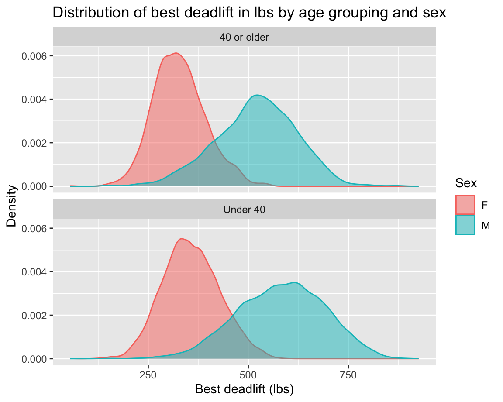

library(tidyverse)
library(tidymodels)Lab 4
By the end of this lab you will create and fit regression models with a single predictor and visualize a simple regression model.
For all visualizations you create, b sure to include informative titles for the plot, axes, and legend!
Getting started
Go to Posit Cloud and start the project titled lab-4 - Regression with a single predictor.
Under the Files tab on the lower right, click on
lab-4.qmdto open the lab template.Complete the exercises in this document.
Packages
In this lab we will work with the tidyverse packages, which is a collection of packages for doing data analysis in a “tidy” way.
Part 1: Do you even lift?
Today, we will be working with data from www.openpowerlifting.org. This data was sourced from Tidy Tuesday and contains international powerlifting records at various meets. At each meet, each lifter gets three attempts at lifting max weight on three lifts: the bench press, squat and deadlift.
ipf <- read_csv("data/ipf.csv")The data dictionary for this dataset from TidyTuesday is reproduced below:
| variable | description |
|---|---|
name |
Individual lifter name |
sex |
Binary gender (M/F) |
event |
The type of competition that the lifter entered. Values are as follows:
|
equipment |
The equipment category under which the lifts were performed. Values are as follows:
|
age |
The age of the lifter on the start date of the meet, if known. |
age_class |
The age class in which the filter falls, for example 40-45 |
division |
Free-form UTF-8 text describing the division of competition, like Open or Juniors 20-23 or Professional. |
bodyweight_kg |
The recorded bodyweight of the lifter at the time of competition, to two decimal places. |
weight_class_kg |
The weight class in which the lifter competed, to two decimal places. Weight classes can be specified as a maximum or as a minimum. Maximums are specified by just the number, for example |
best3squat_kg |
Maximum of the first three successful attempts for the lift. Rarely may be negative: that is used by some federations to report the lowest weight the lifter attempted and failed. |
best3bench_kg |
Maximum of the first three successful attempts for the lift. Rarely may be negative: that is used by some federations to report the lowest weight the lifter attempted and failed. |
best3deadlift_kg |
Maximum of the first three successful attempts for the lift. Rarely may be negative: that is used by some federations to report the lowest weight the lifter attempted and failed. |
place |
The recorded place of the lifter in the given division at the end of the meet. Values are as follows:
|
date |
ISO 8601 Date of the event |
federation |
The federation that hosted the meet. (limited to IPF for this data subset) |
meet_name |
The name of the meet. The name is defined to never include the year or the federation. For example, the meet officially called 2019 USAPL Raw National Championships would have the MeetName Raw National Championshps. |
For all of the following exercises, you should include units on axes labels, e.g. “Bench press (lbs)” or “Bench press (kg)”. “Age (years)” etc. This is good practice.
Exercise 1
Let’s begin by taking a look at the squat lifting records.
To begin, remove any observations that are negative for squat. Next, create a new column called best3_squat_lbs that converts the record from kg to lbs (you may have to google the conversion). Save your data frame as ipf_squat. Report the number of rows and columns of this new data frame using inline code.
Hint
First, you’re taking a dataset and filtering it for certain records, and then you’re mutate-ing that dataset to gain a new column, and you’re assigning the resulting dataset to a new object called ipf_squat.
Exercise 2
Using ipf_squat from the previous exercise, create a scatter plot to investigate the relationship between squat (in lbs) and age. Age should be on the x-axis. Adjust the alpha level of your points to get a better sense of the density of the data. Add a linear trend-line. Be sure to label all axes and give the plot a title. Comment on what you observe.
Exercise 3
Write down the linear model to predict lift squat lbs from age in \(x\), \(y\), \(\beta\) notation. What is \(x\)? What is \(y\)? Next, fit the linear model, and save it as age_fit. Re-write your previous equation replacing \(\beta\) with the numeric estimates. This is called the “fitted” linear model. Interpret each estimate of \(\beta\). Are the interpretations sensible?
Exercise 4
Building on your ipf_squat data frame, create a new column called age2 that takes the age of each lifter and squares it. Save it to your data frame ipf_squat. Next, plot squat in lbs vs age2 and add a linear best fit line. Does this model look like it fits the data better?
Hint
To raise a value to a power, use ^ in R, e.g.: 2 ^ 2 gives you 4, 2 ^ 3 gives you 8, etc.
Exercise 5
One metric to assess the fit of a model is the correlation squared, also known as \(R^2\). Fit the age\(^2\) model and save the object as age2_fit. Subsequently run
glance(age2_fit)$r.squaredto examine the \(R^2\). Compare \(R^2\) of the age\(^2\) model to the \(R^2\) of the model from Exercise 3. Which has a higher \(R^2\)?
Note
\(R^2\) values range from 0 to 1. Values close to 0 means weak correlation between the variables whereas \(R^2 = 1\) implies perfect correlation. You can (optionally) read more about \(R^2\) in section 7.2.5 of the book. We’ll pick up here in the next class.
Exercise 6
Next, let’s turn our attention to dead lifting records.
Recreate the plot below. Make sure axes and title labels are exactly matching, including spelling, capitalization, etc. Based on the plot below, which impacts deadlift weight more, age category or sex?
Hint
You will need to create a couple of new columns. One to classify age appropriately and one to convert best3deadlift_kg to the plotted units (lbs). Notice that there are no negative deadlift values on the x-axis.

Exercise 7
Finally, let’s turn our attention to bench press records.
To begin, remove any observations that are negative for bench press, create two new columns: best3bench_lbs and bodyweight_lbs. Save the result in a new data frame called ipf_bench.
Then, create a scatter plot to investigate the relationship between best bench press (in lbs) and the lifter’s bodyweight (in lbs). Bodyweight should be on the x-axis. Add a linear trend-line. Be sure to label all axes and give the plot a title. Comment on what you observe.
Exercise 8
Fit the linear model displayed in the previous exercise and write down the fitted model equation only, replacing \(\hat{\beta}\)s with their fitted estimates. Interpret the \(\hat{\beta}\)s (intercept and slope). Report \(R^2\). Is body weight an important predictor of bench press ability? Why or why not?
Part 2: IMS Exercises
The exercises in this section do not require code. Make sure to answer the questions in full sentences.
Exercise 9
IMS - Chapter 7 exercises, #18: Over-under, II.
Exercise 10
IMS - Chapter 7 exercises, #24: Cats weights.
Wrap up
Submitting
Important
Before you proceed, first, make sure that you have updated the document YAML with your name! Then, render your document one last time, for good measure.
To submit your assignment to Gradescope:
Go to your Files pane and check the box next to the PDF output of your document (
lab-3.pdf).Then, in the Files pane, go to More > Export. This will download the PDF file to your computer. Save it somewhere you can easily locate, e.g., your Downloads folder or your Desktop.
Go to the course Canvas page and click on Gradescope and then click on the assignment. You’ll be prompted to submit it.
Mark the pages associated with each exercise. All of the papers of your lab should be associated with at least one question (i.e., should be “checked”).
Warning
If you fail to mark the pages associated with an exercise, that exercise won’t be graded. This means, if you fail to mark the pages for all exercises, you will receive a 0 on the assignment. The TAs can’t mark your pages for you, and for them to be able to grade, you must mark them.
Grading
| Exercise | Points |
|---|---|
| Exercise 1 | 3 |
| Exercise 2 | 5 |
| Exercise 3 | 5 |
| Exercise 4 | 5 |
| Exercise 5 | 5 |
| Exercise 6 | 8 |
| Exercise 7 | 6 |
| Exercise 8 | 7 |
| Exercise 9 | 4 |
| Exercise 10 | 2 |
| Total | 50 |